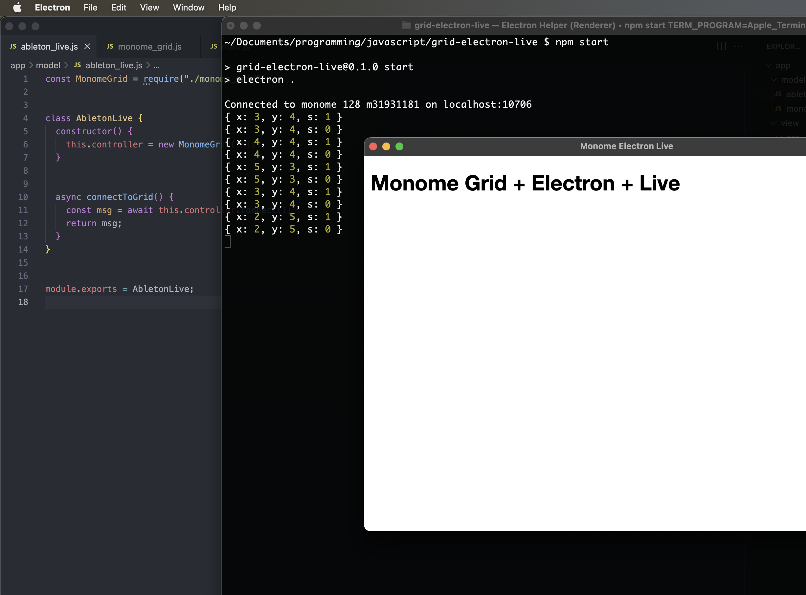

Tables & Waves
Step 2: Connect the Electron App to the monome grid
This is step 2 of the Grid+Electron+Live Tutorial.
New Files & Dependencies
Let's create a few more files and folders:
$ mkdir config
$ touch config/grid.yml
$ touch app/model/ableton_live.js
$ touch app/model/monome_grid.js
Next, let's add a few NPM package dependencies:
$ npm install serialosc
$ npm install js-yaml
Update the three code files referenced below. Note that two are newly created in this tutorial step and the third, main.js, already exists from step 1.
Now add the serial number for your grid to the configuration file:
$ more config/grid.yml
serial: m123456789
Update the Files & Run
As in step 1, update each of the files listed in Code Updates for Step 2 with the code below. The main.js file was created in step 1, but now its coded needs to be updated so it looks like the version below.
Now when you run npm start in your terminal, the Electron UI will launch again. However, if things are working correctly, you should see a message indicating that the app has established communication with your grid. Additionally, if you press buttons on the grid, you should see “press” objects logging to the terminal window:
$ npm start
Code Updates for Step 2
./app/model/monome_grid.js
The MonomeGrid class will be used to communicate with the grid hardware.
const fs = require("fs");
const path = require("path");
const yaml = require("js-yaml");
const serialosc = require("serialosc");
const CONFIG_DIRECTORY = path.resolve(__dirname, "../../config");
class MonomeGrid {
device = undefined;
daw = undefined;
constructor(abletonLive) {
this.daw = abletonLive;
}
/**
* This is fundamentally the same code as the monome website's grid studies.
*/
async connect() {
const config = yaml.load(
fs.readFileSync(
path.resolve(CONFIG_DIRECTORY, "grid.yml"),
"utf8"
)
);
return new Promise((resolve, reject) => {
let addEvent = config.serial + ":add";
serialosc.start({ startDevices: false });
serialosc.on(addEvent, (device) => {
if (this.device) return;
if (device.type != 'grid') return;
this.device = device;
this.device.on('initialized', () => this.device.on('key', (press) => this.keyPress(press)));
this.device.start();
resolve(`Connected to ${this.device.model} ${this.device.id} on ${this.device.deviceHost}:${this.device.devicePort}`);
});
});
}
keyPress(press) {
console.log(press);
}
}
module.exports = MonomeGrid;
./app/model/ableton_live.js
The AbletonLive class will be used to coordinate communication between the Electron app and Live. It will also serve as an intermediary between Live and the grid hardware. At this point in the tutorial, it is only connecting to the grid.
const MonomeGrid = require("./monome_grid");
class AbletonLive {
constructor() {
this.controller = new MonomeGrid(this);
}
async connectToGrid() {
const msg = await this.controller.connect();
return msg;
}
}
module.exports = AbletonLive;
./main.js
This code was created in Step 1 of this tutorial. The additions in Step 2 include:
- Requiring the AbletonLive class and creating an instance of it as the variable
daw - Inserting a new
.then()handler so the Electron app connects to the grid prior to loading its window
const { app, BrowserWindow } = require('electron');
const path = require('path');
const AbletonLive = require('./app/model/ableton_live');
const daw = new AbletonLive();
function createWindow () {
const win = new BrowserWindow({
width: 800,
height: 600,
webPreferences: {
preload: path.join(__dirname, 'preload.js')
}
});
win.loadFile('app/view/index.html');
}
app.whenReady().then(() => {
daw.connectToGrid().then((msg) => {
console.log(msg);
});
}).then(() => {
createWindow();
app.on('activate', () => {
if (BrowserWindow.getAllWindows().length === 0) {
createWindow();
}
});
})
app.on('window-all-closed', () => {
if (process.platform !== 'darwin') {
app.quit();
}
});